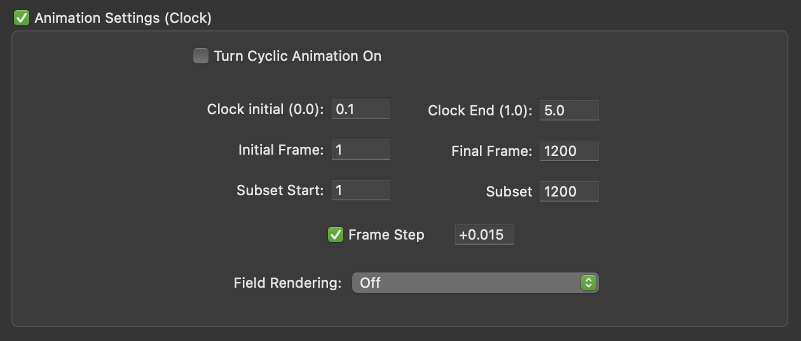

Pov-Ray Blobmap Animation
A blob shape with an environment map making use of POV-Ray's in-built clock animation feature.
An animation like this could be done in realtime in a browser these days using WebGL. In the 1990s I was using POV-Ray on an Apple Performa 5200 (widely considered the worst Mac ever made) and something like this would have taken a few days to render but on a M1 Macbook Air it took around 20 minutes.
The frames were exported with a green background, converted to a video using Quicktime Player (File > Open Image Sequence), iMovie is free with MacOS so I used that to composite the final video; you can configure a clip to have green screen removal, add the source background image and add audio (generated by Modular Play on Playdate).
#declare lb = -2;//lower bound
#declare ub = 4;//upper bound
#declare seeed = seed(148573);
global_settings { assumed_gamma 2.2 }
//Green background for chroma key removal
background { color rgb <0, 1, 0> }
camera {
angle 15
location <0,0,-43>
look_at <0,0,0>
}
sphere{
0,1.3
pigment{
image_map{
png "bwrap2.png" once interpolate 2 map_type 1
}
}
finish{emission 1.2}
scale 30
hollow
no_image
}
blob {
threshold clock
#for (i,0,64)
sphere{ <rand(seeed)*(ub - lb), rand(seeed)*(ub - lb), rand(seeed)*(ub - lb)> , rand(seeed) * clock, 5.5 }
#end
finish {
ambient 0.4
diffuse 0.5
reflection .86
}
rotate <clock*360, 0, 0>
translate <-3, -2.5, 0>
} 